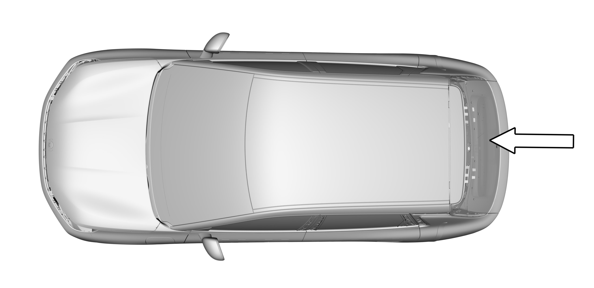
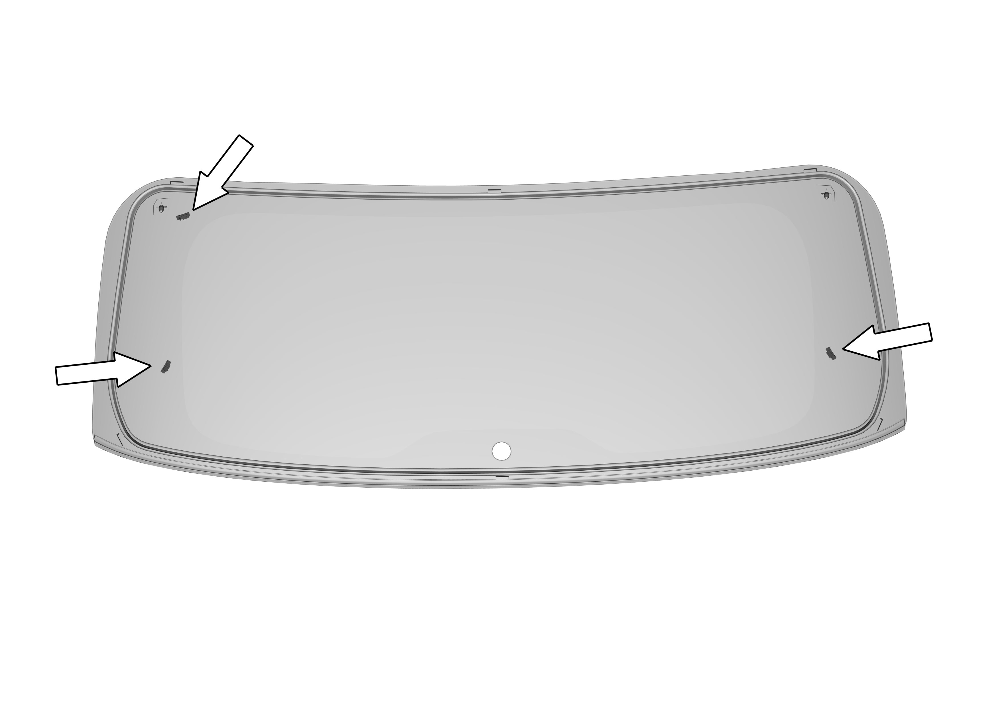

拆卸
1.拆除外部扰流板、侧装饰件以及雨刮臂；
2.打开背门；
3.拆卸背门饰板；
4.拆除两侧除霜加热器以及天线放大器线束接头；
5.使用挡风玻璃除胶工具拆卸后挡风玻璃；

6.在其它技师的帮助下，用玻璃吸盘拆卸下后挡风玻璃
安装
1.清理后挡风玻璃槽凸缘内残余的粘合剂；
2.检查金属片有无损坏，铁锈或无关 材料等易引起玻璃破损的物质；

3.将热风枪温度控制在 25 ℃，消除后挡风玻璃槽凸缘及玻璃粘胶条的湿气；
4.准备好PU粘合剂、玻璃及其它附件；
5.使用胶枪在后挡玻璃打胶线上均匀挤出粘接胶，呈7mm宽、13mm高的三角形；
6.在其他技师的帮助下使用玻璃吸盘安装后挡风玻璃；
7.如果常温降到10℃以下，使用热风枪在距表面约 50 mm 处加热 ( 25 ℃ ) 持续 15 min( 在汽车的内部或外部 )；
8.安装完成后增加对密封性的检查，如淋雨等进行检查，检查过程中注意对车内进行保护处理
9.连接两侧除霜加热器、天线放大器线束接头；
10.安装背门内饰板；
11.安装外部扰流板、侧装饰件以及雨刮臂。